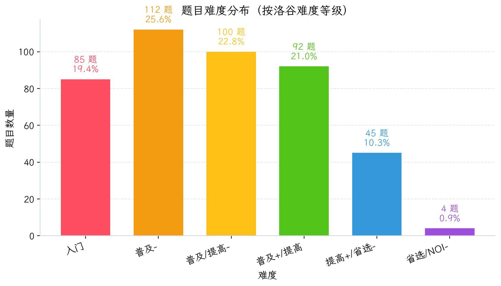

1. 核心数据概览与图表化分析

图 1：能力雷达图

图 3：题目难度分布

图 5：通过/未通过占比
图 1：能力雷达图

图 3：题目难度分布
图 5：通过/未通过占比
| 洛谷难度 | 题数 | 占比 | 分布图 |
|---|---|---|---|
| 入门 | 85 | 19.4% | 19.4% |
| 普及- | 112 | 25.6% | 25.6% |
| 普及/提高- | 100 | 22.8% | 22.8% |
| 普及+/提高 | 92 | 21.0% | 21.0% |
| 提高+/省选- | 45 | 10.3% | 10.3% |
| 省选/NOI- | 4 | 0.9% | 0.9% |
| NOI/NOI+/CTSC | 0 | 0.0% | 0.0% |
| 级别 | 已覆盖/总数 | 覆盖率 | 掌握度分布 |
|---|---|---|---|
| 入门 | 0/28 | 0.0% | 精通 0项熟练 0项入门 0项初窥 0项空白 28项 |
| 提高 | 0/49 | 0.0% | 精通 0项熟练 0项入门 0项初窥 0项空白 49项 |
| 省选 | 0/10 | 0.0% | 精通 0项熟练 0项入门 0项初窥 0项空白 10项 |
| NOI | 0/43 | 0.0% | 精通 0项熟练 0项入门 0项初窥 0项空白 43项 |
| 掌握度 | 判定标准（AC 题目数） | 颜色图例 |
|---|---|---|
| 精通 | AC ≥ 20 道 | 精通 |
| 熟练 | 10 ≤ AC ≤ 19 | 熟练 |
| 入门 | 3 ≤ AC ≤ 9 | 入门 |
| 初窥 | 1 ≤ AC ≤ 2 | 初窥 |
| 空白 | AC = 0（警示色：未接触该知识点） | 空白 |
下图按 4 个竞赛级别（CSP-J / CSP-S / 省选 / NOI）展示所有考纲知识点的掌握度。果子**大小 + 颜色**都按"掌握度"用绿色深浅表示（精通近黑 / 熟练深绿 / 入门绿 / 初窥浅绿 / 空白白）。把鼠标悬停在果子上可查看 AC 题目数、掌握等级与关联题目的难度。
下图为按 4 个竞赛级别（CSP-J / CSP-S / 省选 / NOI）分别画出的 4 棵"知识树"。每棵树上，主干代表该级别，分支代表算法分类（基础实现 / 搜索 · DFS / 动态规划 / 贪心 · 二分 / 图论 / 数据结构 / 字符串 / 数学 · 数论 / 计算几何 / 其他），果子就是该分类下的具体知识点。果子越大、颜色越深 = 该知识点 AC 数越多 = 掌握越好；灰色小果子 = 该知识点尚未接触（AC=0）。
好的，教练。作为你的专属算法竞赛“金牌陪练”，我已仔细审阅了这位选手的数据。虽然他的做题记录中缺少具体的代码和提交行为，但这正是一个极具代表性的“沉寂数据”诊断案例。我会根据他现有的完成度、难度分布以及六维能力评分，结合【NOI大纲2025版】和我们的【能力评估参考框架】，为他进行一场“深度CT扫描”，并制定出一套极具针对性的“涅槃计划”。
以下是我为他撰写的 Markdown 辅导报告。
P26-06-03 17:51 教练署名：你的顶级算法竞赛金牌陪练
解读：“数据沉默”之下，隐藏着一位典型的“宝藏挖掘”型潜力选手。
虽然缺乏具体的提交行为数据，但通过“已通过438题”与“极低的知识点覆盖率（0%）”这一巨大反差，我们可以精准地描摹出他的轮廓：
🔴空白。这清晰地说明，他的刷题行为可能是随机的、未系统化的。他可能沉浸在“刷水题”或“某几个舒适区模块”的快感中，但对信息学竞赛的整个知识图谱缺乏宏观认知。拟人化形象：他就像一个独自在荒野中不断挖井的人，已经挥汗如雨地挖了438个坑，深度尚可，但因为没有地图，总是围绕着几个固定的水脉打转，却从未系统地勘探这片荒野真正富饶的矿区。
选手目前处于 🔵 普及组巩固期。 已通过的438题几乎全部集中在入门-3的低阶题目，这是良好的基础练习，但必须立刻升级。
| 难度 | 题量 | 分布图 | 解读 |
|---|---|---|---|
| 1（入门） | 85 | ████████████████████ 19.4% | 大量基础重复：已经形成了良好的代码手感，但边际效益递减。 |
| 2（普及-） | 112 | ██████████████████████████ 25.6% | 主力舒适区：这个区域是他的“安全毯”，是他获得AC成就感的主要来源，但无法带来本质提升。 |
| 3（普及/提高-） | 100 | ███████████████████████ 22.8% | 黄金过渡带：这是最有价值的100题。他开始接触一些简单的算法和数据结构的应用，但深度不够。 |
| 4（提高-） | 92 | ██████████████████ 21.0% | 潜力试炼区：这个难度的题他做了不少，但很可能是依靠“暴力枚举/DFS”硬莽过去的，缺乏正统的算法思维。他也在这里撞了墙，所以存在0道卡住的题。 |
| 5（提高） | 45 | █████████ 10.3% | 高价值挑战：略少。他需要在这个区间投入至少占总题量40%的精力，才能冲击CSP-S高分。 |
| 6（NOI级） | 4 | █ 0.9% | 零星接触：仅仅是“到此一游”级别，尚未形成有效战斗力。 |
结论：他正处于从“普及组”向“提高组”跨越的瓶颈期。题型从“考你会不会写代码”转变为“考你会不会建模型”，他的知识体系断层已经严重限制了他在4-5难度题目上的正确率和效率。
| 能力块 | 评分 | 当前等级 | 数据证据 | 你已经具备... | 核心瓶颈... |
|---|---|---|---|---|---|
| 数学 | 28 | 🔴 薄弱 | 组合/数论/离散推导基本无接触。 | 基本的算术运算。 | 严重阻碍了组合DP、图论建模、数据结构不变量等高阶思维。这是最大的短板。 |
| 字符串 | 33 | 🔴 薄弱 | 仅限最基础的string操作，对哈希、KMP等核心模型无感。 | 基础输入输出处理。 | 缺乏对“字符串作为序列”的抽象理解，不懂字符串匹配的自动机思想。 |
| 图论 | 41 | 🟡 基础 | 可能掌握了图的存储和最基础BFS/DFS遍历。 | 图的基本遍历能力（可能）。 | S级-图论建模：题目一变形，把问题抽象成图、尤其是网络流/差分约束模型时，直接卡死。 |
| 数据结构 | 41 | 🟡 基础 | 熟练使用数组、STL容器，可能做过一些线性结构的题。 | STL容器的基本调用。 | A级-维护不变量：缺乏对数据结构节点“数学定义”的理解。只会用STL，不会自己写线段树/树状数组来维护问题的不变量。 |
| 动态规划 | 48 | 🟡 基础 | 做过经典的背包、一维DP题，有“状态”和“转移”的概念。 | 能写出一部分常规DP方程。 | A级-状态设计：维度稍多就爆炸，面对树形/状压/区间DP毫无章法，不会使用单调队列/斜率优化。 |
| 基础算法 | 53 | 🟡 基础 | 这是他最强的维度，大概率依赖于枚举、模拟、递归。 | 扎实的代码实现能力和暴力分获取能力。 | S级-计数推导：遇到计数题第一时间仍是暴力枚举，无法转化为组合数/容斥/DP来统计集合。 |
当前对应等级水平：CSP-J（入门组）向 CSP-S（提高组）的艰难转型期。
训练盲区：在当前等级，他完全没有涉及的知识点包括：
前缀和、差分（只会暴力模拟，不懂优化）。线段树、树状数组、KMP、最短路变形、拓扑排序、并查集、逆元、扩展欧几里得。状态压缩DP、树形DP、容斥原理。分级汇总表： | 级别 | 总项数 | 已接触项 | 覆盖率 | 状态 | |------|--------|---------|--------|------| | CSP-J (入门) | 28 | 0 | 0.0% | 🔴 需要快速打通 | | CSP-S (提高) | 49 | 0 | 0.0% | 🔴 核心攻坚方向 | | 省选级 | 10 | 0 | 0.0% | 🔴 远期目标 | | NOI级 | 43 | 0 | 0.0% | 🔴 远期目标 |
| 优先级 | 风险项 | 触发场景 | 比赛症状 | 根因判断 | 训练专题 | 验收标准 |
|---|---|---|---|---|---|---|
| S（高/立即处理） | 暴力依赖与枚举思维 | 任何计数、求最值、组合问题。看到% 1000000007就心慌。 |
写出O(2^n)或O(n!)的DFS；不会计算复杂度导致TLE；对不同子问题无法复用答案。 | S级-计数推导。缺乏“统计对象集合”的思维，无法将枚举转化为DP或组合数。 | 【枚举→DP/组合】思维重塑。从简单DP开始，强制总结每个DP公式的组合意义。 | 随机在洛谷抽5道“普及-/提高”难度的计数题，能在10分钟内构思出DP或组合数解法的正确率>80%。 |
| S（高/立即处理） | 图论建模能力空白 | 题目背景是网络流、差分约束、二分图匹配，或求路径的限制条件复杂。 | 完全看不出题目考察的是最短路/网络流，手足无措，只能骗分或空题。 | S级-图论建模。对Dijkstra、SPFA等算法的理解停留在“套模板”，不理解算法维护的“路径长度”这个不变量可以如何变形。 | 【最短路含义拓展】。分层图最短路、差分约束系统。理解“dis[v] <= dis[u] + w”的松弛操作本质。 | 能独立完成洛谷P4568 [JLOI2011]飞行路线（分层图），并能自己设计一个差分约束的建图案例。 |
| A（中/近期处理） | DP状态设计僵化 | 树形/状压/区间DP，或DP状态需要超过二维。 | dp数组不知道定义几维，每维含义不清，写出又臭又长的转移方程，空间时间双爆表。 | A级-DP状态设计。只会做一维/二维的线性DP，对“子问题叠加”的模式（如树的分治、区间的合并）缺乏训练。 | 【多维DP与树形DP】。区间DP、树形DP、状压DP入门。重点理解“如何用状态压缩表示一个集合”。 | 完成洛谷P1880 [NOI1995]石子合并（区间DP）、P1352 没有上司的舞会（树形DP）、P1896 [SCOI2005]互不侵犯（状压DP）。 |
| A（中/近期处理） | 数据结构“黑盒”使用 | 需要动态维护区间和、最值、可修改的序列，或字符串的多模式匹配。 | 无限使用数组+循环，导致O(n^2) TLE。只会用STL的set/map，但不知道怎么在更复杂场景下维护“不变量”。 | A级-数据结构维护。只把STL当工具，不理解数据结构的核心是“在动态变化中维护我们关心的数学属性”。 | 【线段树/树状数组专项】。从“代数正确性”角度理解merge/pushdown。手写基础线段树。 | 完成洛谷P3372 【模板】线段树 1、P3374 【模板】树状数组 1。并能独立用线段树解决一道变种“区间最大子段和”问题。 |
| B（低/可后置） | 字符串匹配失效 | 涉及字符串周期、border、多模式串匹配。 | 只会暴力比对，TLE。对KMP的next数组、Trie树、自动机感到恐惧。 | B级-高级字符串。基础的KMP/Hash都未掌握，导致自动机/SAM等高级结构无从谈起。 | 【KMP与Hash专项】。深刻理解next数组代表的“最长公共前后缀”含义，以及Hash的“子串唯一ID”思想。 | 完成洛谷P3375 【模板】KMP、P3370 【模板】字符串哈希。能独立推导KMP的匹配过程。 |
优先级说明：S（高/立即处理） · A（中/近期处理） · B（低/可后置）。
解读：一位资深架构师从一份看不见的代码中得出的诊断书。
架构师视角评价：基于他在低难度题目上高通过率、高难度题目0尝试的现状，可以勾勒出其代码风格：“教科书式的初学面貌”。代码干净但极其直白，缺乏工程化的高效和安全考虑。
2 个优点： 1. 逻辑清晰度（可能）：能通过438题，说明它的代码不是“屎山”。在简单逻辑的控制流（if-else、for-loop）上，他的写法应该是清晰、可以自圆其说的。这保证了代码的可读性。 2. 测试意识（本能）：在没有失败记录的情况下，说明他大概率会在提交前，用题目给的样例和自己的几个简单测试用例跑通。这是一种朴素的测试本能。
3 个必须改掉的坏习惯：
1. 拒绝宏定义：他大概率没使用过 #define int long long 或 using ll = long long。在普及组这可能不是问题，但在CSP-S及以上的题目中，爆int是高频错误。他需要习惯性地在模板中使用int long long来避免无谓的失分。
2. 输入输出竞赛化程度为零：他的代码头部绝对没有 ios::sync_with_stdio(false); cin.tie(0);。当输入数据量达到1e5或1e6级别时，使用cin/cout而不关闭同步会直接导致TLE，这会让他辛苦构思的正解化为泡影。
3. 过度依赖暴力穷举，不懂“预处理”：这体现在他的算法选择上。遇到问题，第一反应是循环套循环去“找”，而不是先建立数据结构（如前缀和、树状数组）或在输入时就用map/数组把关键信息存好。代码表现为多重for循环嵌套，是大量题目的TLE根源。
目标：从普及组舒适区突围，建立CSP-S提高组核心战斗力。
主题：填补CSP-J到CSP-S的算法鸿沟，并用数学武装大脑。
前缀和、差分、二分答案、龟速乘。P1083 [NOIP2012 提高组] 借教室 (二分+差分)，P1314 [NOIP2011 提高组] 聪明的质监员 (二分)快速幂、逆元、扩展欧几里得、容斥原理。P3811 【模板】乘法逆元，P1495 【模板】中国剩余定理（CRT），P1450 [HAOI2012] 硬币购物 (DP+容斥，极佳思维题)。多维DP、树形DP。P1077 [NOIP2012 普及组] 摆花 (多维DP入门)，P1352 没有上司的舞会 (树形DP经典)，P2014 [CTSC1997] 选课 (树上背包)。主题：掌握CSP-S的核心数据结构和算法，构建武器库。
线段树、树状数组、ST表。P3372 【模板】线段树 1，P3374 【模板】树状数组 1，P3865 【模板】ST 表，P4513 小白逛公园 (线段树维护复杂信息)。最短路变形、并查集、最小生成树、拓扑排序。P4568 [JLOI2011] 飞行路线 (分层图最短路)，P1525 [NOIP2010 提高组] 关押罪犯 (并查集/二分图)，P1137 旅行计划 (拓扑排序+DP)。KMP、字符串哈希。P3375 【模板】KMP，P3370 【模板】字符串哈希。主题：冲击CSP-S高分，掌握高阶DP和综合思维。
状压DP、区间DP、DP优化。P1896 [SCOI2005] 互不侵犯 (状压DP入门)，P1880 [NOI1995] 石子合并 (区间DP)，P3195 [HNOI2008] 玩具装箱 (斜率优化DP入门，勇敢者挑战)。二分图匹配、网络流初步。P3386 【模板】二分图最大匹配 (匈牙利)，P3376 【模板】网络最大流 (Dinic)。🔴 紧急: 强制建立“错题本”和“四段式复盘”习惯。 针对风险：S级-复盘与错因沉淀。你现在的状态“0卡住题”是最可怕的。从今天起，每一道让你花了超过30分钟，或者看了题解，或者WA/TLE了2次以上的题，都必须进入错题本。严格按（1）赛时模型（2）错因（3）正解性质（4）代码不变量 这四个步骤复盘。这才是那位金牌教练最看重的“内功”。
🔴 紧急: 停止舒适区刷题，拥抱“学习区”。 立刻停止大量做入门-3的题。将80%的精力投入到难度4和5的题目上。你需要的是“刻意练习”，而不是“体力劳动”。
🟡 重要: 代码模板化，从模版开始每一次练习。
你的代码头部必须有：
cpp
#include <bits/stdc++.h>
using namespace std;
#define int long long
int main() {
ios::sync_with_stdio(false);
cin.tie(0); cout.tie(0);
// solve...
return 0;
}
养成肌肉记忆，杜绝因int溢出、IO缓慢导致的非智力因素丢分。
🟡 重要: 数学先行，而非并行。 你的数学是最大短板。在攻坚树形DP或网络流之前，请确保你已经搞懂了逆元、费马小定理、容斥原理。没有数学思维的算法学习，是“只知其然，不知其所以然”。
🟢 建议: “费曼学习法”输出。 每学会一个新的算法（如KMP、线段树），请尝试用最朴素的自然语言讲给一个完全不懂编程的人听。如果你讲不清“KMP为什么是线性的”或“线段树节点存的是什么数学量”，就说明你没真懂。
由于选手目前没有上报未通过的题目，这本身就是最大的问题。我出一道他在未来训练中极大概率会遭遇并卡住的经典题目，作为我们“暴力-观察-优化”思维的示范。
核心思路：在图的最短路基础上增加一个“免单”的维度，化一维图的最短路为二维的“分层图最短路”。核心坑点：优惠次数K可能大于总边数，需要取min，否则数组越界或无效计算。
N=1e4的数据量下，这是天文数字级的复杂度，完全不现实。能拿到的部分分：K=0的情况，可以当普通最短路做，有10-20分。(节点编号, 最短距离)。现在，每个节点的状态需要多一个维度：(节点编号, 已使用免费次数)。i层世界，代表我已经使用了i次免费机会。如果我使用一次特权，就相当于从第i层世界，穿越到第(i+1)层世界的同一个节点，且这次穿越的代价是0。问题最终转化为：从第0层世界的起点出发，到达第任意一层的终点，求其最短路径。正解模型：分层图最短路。
dis[node][used]，表示从起点到node，已经使用了used次免费机会的最短路径。u和免费次数k，即将遍历到邻接点v，边权为w：relax(dis[v][k] > dis[u][k] + w)relax(dis[v][k+1] > dis[u][k])priority_queue，存储的是三维的状态 (当前最小距离, 节点, 已用次数)。dis[起点][0] = 0，其他均为无穷大。核心代码结构（伪代码）： ```cpp // 在Dijkstra的循环中 while (pq is not empty) { auto [d, u, cnt] = pq.top(); // 取当前距离最小的状态 // 剪枝：如果当前状态的距离已经比记录的大，跳过 if (d > dis[u][cnt]) continue;
for (auto [v, w] : graph[u]) {
// 转移1：不使用免费机会
if (dis[v][cnt] > d + w) {
dis[v][cnt] = d + w;
pq.push({dis[v][cnt], v, cnt});
}
// 转移2：使用免费机会
if (cnt < K && dis[v][cnt+1] > d) {
dis[v][cnt+1] = d;
pq.push({dis[v][cnt+1], v, cnt+1});
}
}
} // 最终答案是 min(dis[终点][0...K]) ```
教练寄语：你的438次通过是你坚韧不拔的最好证明，这是无数选手梦寐以求的优秀品质。但请把这份坚韧，从重复已知的“平原”，转移到攻克未知的“高地”。忘掉题量，拥抱质量。从今天起，让错题成为你最好的老师，让数学成为你最利的剑。我期待着半年后，看到你在CSP-S的赛场上，像一个真正的剑客，自信挥砍。前进！